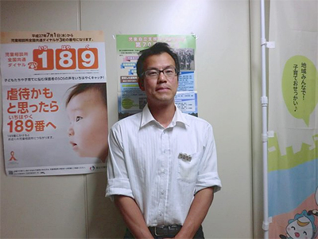

3.11を忘れない・・
みやぎ生協から被災地・宮城のいまをお伝えします
第23回 2015年7月5日
震災孤児・遺児を支える眼と手
宮城県では震災で1,087人もの子どもが親を亡くしました。両親をなくした「孤児」は136人、父または母をなくした「遺児」は951人。多くの子どもたちが将来も続いたであろう親の庇護を失ったことになります。
宮城県は震災直後から避難所を訪問して保護を要する子どもたちの実態把握を行い、2014年（平成24年）3月から全国・全世界からの寄付金をもとに「東日本大震災みやぎこども育英基金支援金・奨学金」制度を立ち上げ、未就学児から大学生まで希望のあった1,048人に対し、金銭的支援を始めました。
孤児のうち134人は祖父母や叔父・叔母などのもとに身を寄せ、2人が児童福祉施設に入所しました。また、里親制度を利用している親族には上記の支援金・奨学金のほかに国から生活費や教育費の支給があります。また孤児・遺児ともに民間の奨学金も併用できるので、経済的なバックアップの用意はある程度整っていると言えそうです。
里親家庭には児童相談所員が定期訪問し、子どもの様子を聞いたり、接し方などについてアドバイスを行なっているほか、心のケアにも子ども総合センターやスクールカウンセラーなどさまざまな機関と連携して取り組んでいます。
しかし、そうした子どもを見守る方々は、保護者の精神の不安定が子どもに投影されている、幼児だった子が4年経って体験を喋るようになりPTSDを発症するかも知れないなどの懸念を持っています。20年前の阪神・淡路大震災の際も、これらの問題は4年目にピークを迎えた、という状況があるからです。
問題はそれだけではありません。宮城県保健福祉部子育て支援課の吉岡弘さんは「保護者は高齢の方が多いので、いつまで養育できるか」と心配を口にします。さらに懸念しているのが虐待の増加です。県は強い危機感を持って防止に取り組んでおり、「児童相談所全国共通ダイヤル“189（いちはやく）”を周知し、連絡を受けたらすぐに動ける体制づくりを進める」と話します。
2011年3月11日午後2時46分を境に人生が大きく変わってしまった孤児・遺児を見守り、支える取り組みが、懸命に続けられています。

「親と暮らすことのできない子どもの受け皿として里親制度の充実に力を入れていきたい」と吉岡さん（宮城県保健福祉部子育て支援課子ども育成班主幹）。
※人数等はすべて2015年3月31日現在のデータ（宮城県）
（情報提供／みやぎ生協）
 前の記事 第22回「声なく在宅被災者の苦しみ」（2015年6月5日掲載）
前の記事 第22回「声なく在宅被災者の苦しみ」（2015年6月5日掲載）